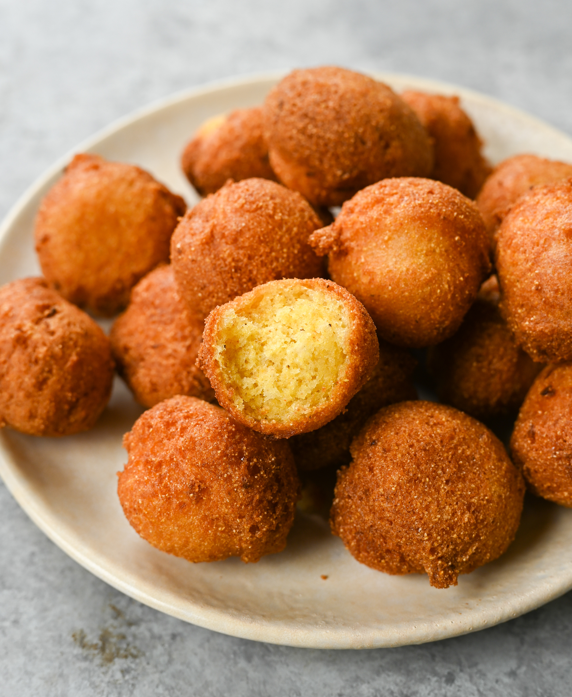

Hush Puppies

The Easiest and Most Delicious Hush Puppies
No, these fried yummy dough balls aren't telling you to be quiet. Instead,
they are telling you to proclaim from the mountaintops how
delicious they truly are! Treat yourself and your friends to the flavor
experience of a lifetime. If you are interested in creating these perfect
little golden nuggets, read on.
Ingredients
-
1 quart vegetable oil for frying, or as needed
-
We have determined the nutritional value of oil for frying based on
a retention value of 10% after cooking. The exact amount will vary
depending on cooking time and temperature, ingredient density, and
the specific type of oil used.
- ¾ cup milk
- 1 egg
- 2 tablespoons minced onion
- 1 cup baking mix
- 1 cup cornmeal
- 1 teaspoon salt
Steps
- Heat oil in a deep-fryer or large saucepan to 350°F (175°C).
- Whisk milk, egg, and onion together in a bowl.
-
Stir pancake mix, cornmeal, and salt into milk mixture to form a smooth
batter.
-
Scoop ping pong ball-sized balls of batter using a small ice cream
scoop; drop about 5 scoops per batch into the hot oil.
- Fry until golden brown, 5 to 6 minutes.
-
Remove hush puppies with a slotted spoon and drain on a paper
towel-lined plate.
- Repeat with remaining batter.